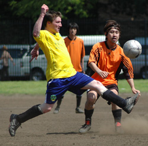
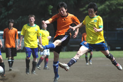
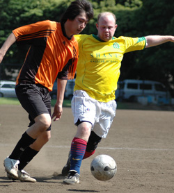

|
Yoyogi NHK, Sunday 20th May,
"How long, oh lord, how long?" (Hunter S. Thompson)
Well, for Shane FC, the answer to the late great Doc's question was "just 90 minutes more" as they came to Yoyogi Park in search of one last victory to add a little respectability to a season which, according to the table, they would mostly like to forget. Their opponents, Stoneds, also suffered a below par season, and in the light of the FA Cup Final, nobody in attendence was expecting a masterclass in the sweltering Tokyo heat.
And indeed, those fans searching a desperate escape from the nearby Jamaican Festival would hardly have been disappointed as the attacking-minded Stoneds struggled to break down a make-shift Shane defence. With so many first choice players missing, though, Shane were never really able to trouble the Stoneds' keeper, and after several close chances and a couple of saves by the Shane keeper, Stoneds deservedly took the lead after a good ball across goal was tapped in by a patently offside forward.

Almost immediately, Stoneds capitalized on Shane's experimental line-up, and the second goal came from neat passing move and something of a freak hit and hope finish.
For the rest of the half, Shane and Stoneds contrived to replicate the tedium of the previous evening's FA Cup final, and for a good twenty minutes nothing happened. The reggae being blasted from the neighbouring festival stage was nice though.
The second half wasn't much better, but Shane's inexperienced side gradually made a little headway into the game and kept the Stoneds pretty much under the cosh, until a blown backpass call by the otherwise excellent referee allowed Stoneds to tap the ball into the open goal. Legitimate, yes, but pretty classless. Manchester United versus Lyon this was not. 
Somewhat stung by the controversial goal, Shane raced back up the pitch, and top-scorer Giles Mitchell showed dolphin like awareness and agility to turn past a couple of defenders to open the game right back up again, following Tom Beakes' good work.
The hot heat and hot tempers took their toll on Shane, and as they pressed to get back into the game, Stoneds' youthful and dynamic front line exploited the increasing number of gaps in the Shane back four, and their skilful passing and neat footwork created a couple of chances, which were dutifully converted with aplomb. In the final minutes, Shane, who had earlier hit the bar, were awarded a penalty for a crude challenge, and Mitchell wonderfully finished from the spot.
The fulltime whistle then blew on an unsavoury game, and as the teams left to enjoy the Caribbean delights on offer, the flattering final score was Stoneds 5 Shane FC 2.
Report by Aiden Wylie.
|